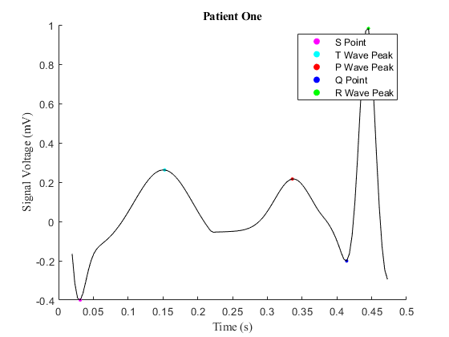
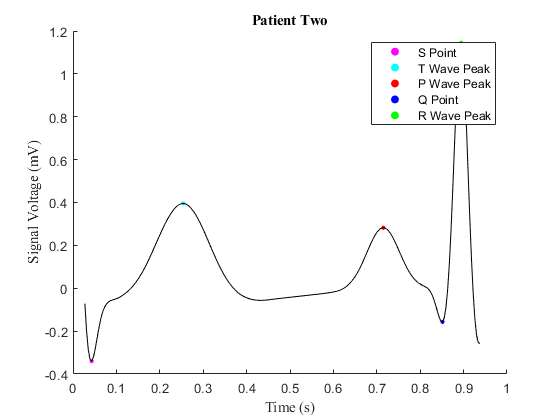
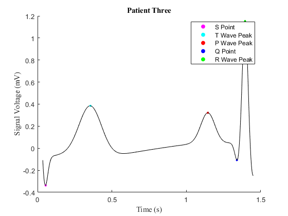
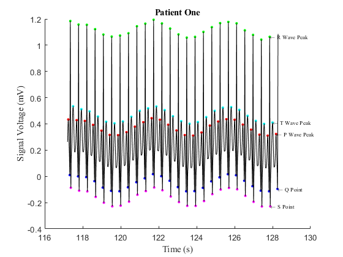
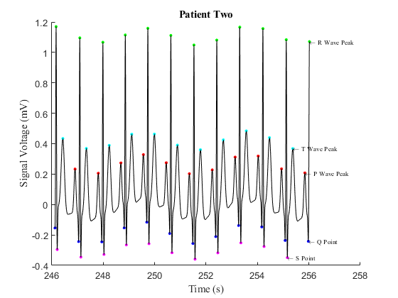
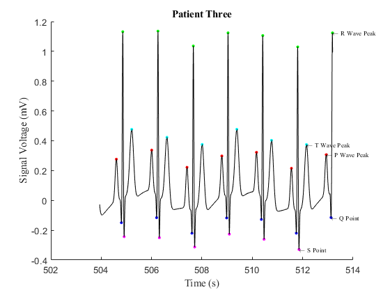

Contents
- THIS PLOTS THE WHOLE GRAPH, IT IS RECOMMENDED NOT TO RUN THIS AND IT WILL REMAIN COMMENTED OUT UNLESS THE TA WISHES TO RUN THIS SECTION
- This calculates the amount of times the general ECG structure repeats and the time length of the PR Interval
- Plots a single ECG repetition
- Plots the last few thousand points for each patient's ECG structure
THIS PLOTS THE WHOLE GRAPH, IT IS RECOMMENDED NOT TO RUN THIS AND IT WILL REMAIN COMMENTED OUT UNLESS THE TA WISHES TO RUN THIS SECTION
%{ figure%New Figure ECGPlotCall('ecg1.mat')%Calls the function which splits up the data into sets of 3000 points for the file title("Patient One", 'FontName', 'Times New Roman');%Adds title in Times New Roman xlabel("Time (s)", 'FontName', 'Times New Roman');%Adds x-axis title in Times New Roman ylabel("Signal Voltage (mV)", 'FontName', 'Times New Roman');%Adds y-axis title in Times New Roman textAdder('ecg1.mat')%Calls function that adds text to the end of the plot figure%New Figure ECGPlotCall('ecg2.mat')%Calls the function which splits up the data into sets of 3000 points for the file title("Patient Two", 'FontName', 'Times New Roman');%Adds title in Times New Roman xlabel("Time (s)", 'FontName', 'Times New Roman');%Adds x-axis title in Times New Roman ylabel("Signal Voltage (mV)", 'FontName', 'Times New Roman');%Adds y-axis title in Times New Roman textAdder('ecg2.mat')%Calls function that adds text to the end of the plot figure%New Figure ECGPlotCall('ecg3.mat')%Calls the function which splits up the data into sets of 3000 points for the file title("Patient Three", 'FontName', 'Times New Roman');%Adds title in Times New Roman xlabel("Time (s)", 'FontName', 'Times New Roman');%Adds x-axis title in Times New Roman ylabel("Signal Voltage (mV)", 'FontName', 'Times New Roman');%Adds y-axis title in Times New Roman textAdder('ecg3.mat')%Calls function that adds text to the end of the plot %}
This calculates the amount of times the general ECG structure repeats and the time length of the PR Interval
times1 = timeCollector('ecg1.mat');%Collects the times of a repeating point ecg1Rate = heartRates(times1);%Examines the amount of points (heartbeat) that repeat in 60 second intervals PR1Rate = PRInterval('ecg1.mat');%Gets the approximated time of each PR Interval PR1Average = averagePRInterval(PR1Rate);%Calculates the average PR Interval time times2 = timeCollector('ecg2.mat');%Collects the times of a repeating point ecg2Rate = heartRates(times2);%Examines the amount of points (heartbeat) that repeat in 60 second intervals PR2Rate = PRInterval('ecg2.mat');%Gets the approximated time of each PR Interval PR2Average = averagePRInterval(PR2Rate);%Calculates the average PR Interval time times3 = timeCollector('ecg3.mat');%Collects the times of a repeating point ecg3Rate = heartRates(times3);%Examines the amount of points (heartbeat) that repeat in 60 second intervals PR3Rate = PRInterval('ecg3.mat');%Gets the approximated time of each PR Interval PR3Average = averagePRInterval(PR3Rate);%Calculates the average PR Interval time
Plots a single ECG repetition
figure%New Figure Plot1('ecg1.mat')%Calls the function that plots a single repetition title("Patient One", 'FontName', 'Times New Roman');%Adds title xlabel("Time (s)", 'FontName', 'Times New Roman');%Adds x axis label ylabel("Signal Voltage (mV)", 'FontName', 'Times New Roman');%Adds y axis label figure%New Figure Plot1('ecg2.mat')%Calls the function that plots a single repetition title("Patient Two", 'FontName', 'Times New Roman');%Adds title xlabel("Time (s)", 'FontName', 'Times New Roman');%Adds x axis label ylabel("Signal Voltage (mV)", 'FontName', 'Times New Roman');%Adds y axis label figure%New Figure Plot1('ecg3.mat')%Calls the function that plots a single repetition title("Patient Three", 'FontName', 'Times New Roman');%Adds title xlabel("Time (s)", 'FontName', 'Times New Roman');%Adds x axis label ylabel("Signal Voltage (mV)", 'FontName', 'Times New Roman');%Adds y axis label  
Plots the last few thousand points for each patient's ECG structure
figure %New Figure load('ecg1.mat')%Loads File ECGplot(ecg,marker,time,30000,32838)%Plots the last few thousand points title("Patient One", 'FontName', 'Times New Roman');%Adds Title xlabel("Time (s)", 'FontName', 'Times New Roman');%Adds x axis label ylabel("Signal Voltage (mV)", 'FontName', 'Times New Roman');%Adds y axis label textAdder('ecg1.mat');%Adds text to plot to label points figure%New Figure load('ecg2.mat')%Loads File ECGplot(ecg,marker,time,63000,65535)%Plots the last few thousand points title("Patient Two", 'FontName', 'Times New Roman');%Adds Title xlabel("Time (s)", 'FontName', 'Times New Roman');%Adds x axis label ylabel("Signal Voltage (mV)", 'FontName', 'Times New Roman');%Adds y axis label textAdder('ecg2.mat');%Adds text to plot to label points figure%New Figure load('ecg3.mat')%Loads File ECGplot(ecg,marker,time,129000,131368)%Plots the last few thousand points title("Patient Three", 'FontName', 'Times New Roman');%Adds Title xlabel("Time (s)", 'FontName', 'Times New Roman');%Adds x axis label ylabel("Signal Voltage (mV)", 'FontName', 'Times New Roman');%Adds y axis label textAdder('ecg3.mat');%Adds text to plot to label points  